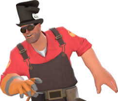
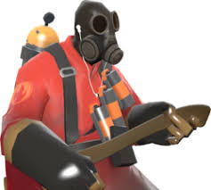
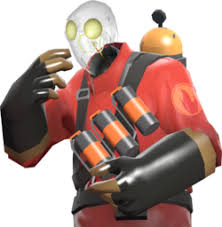
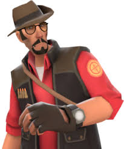

×

Los objetos cosméticos (también conocidos como sombreros o "hats") son elementos de personalización que permiten cambiar la apariencia de los mercenarios. Desde la actualización de las Ofrendas de Sniper vs. Spy en 2009, se han convertido en un pilar de la identidad del juego y de su economía, permitiendo a los jugadores destacar en el campo de batalla con estilos extravagantes, lúgubres o legendarios.Aunque aqui solo se presentan 4 accesorios estos an sido los mas solicitados por los jugadores y fandom de team fortrees 2 :D!!! ¡Haz clic en cualquier tarjeta para ver a detalle!!
|
 Gibus FantasmagóricoEl sombrero más clásico de la comunidad. Consíguelo al dominar a un jugador que lo lleve puesto. |
 Auriculares (Earbuds)Un objeto promocional místico del 2010. Durante años fue la moneda de cambio de clase alta. |
|
 FilamentalReemplaza la cabeza del Pyro con una bombilla incandescente. Ideal para estilos robóticos. |
 CazarrecompensasUn sombrero pirata metálico adornado con monedas de oro brillantes. Súper vistoso. |